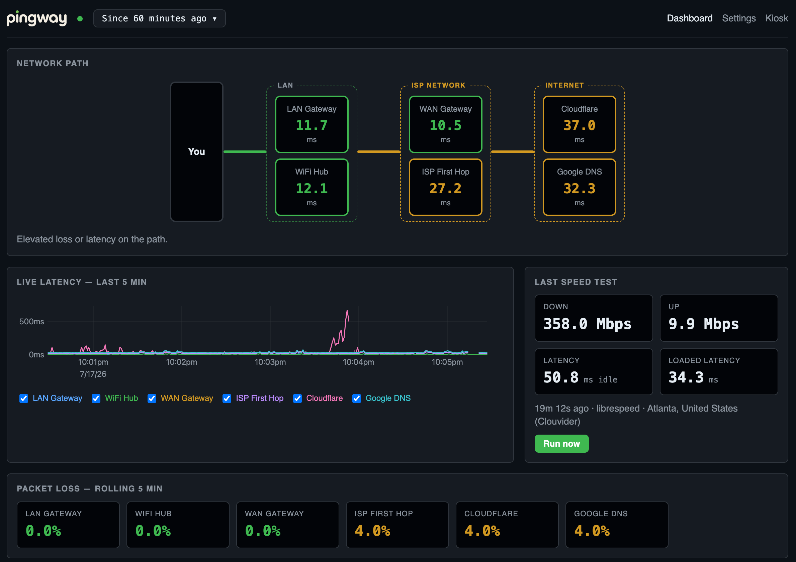
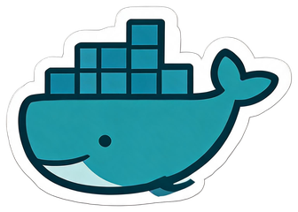
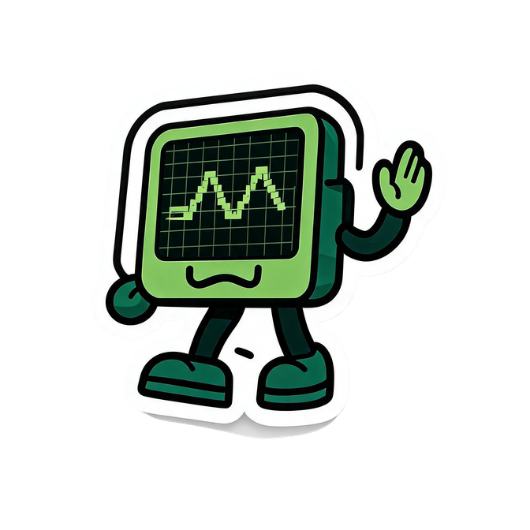

is my internet ok right now
and where is the problem?
From your LAN ISP Internet.
Catch 3-second glitches
before they ruin your day.
curl -fsSL https://raw.githubusercontent.com/jasondcamp/pingway/main/install.sh | bash

the toolkit
1-second monitoring
Green LAN + red Internet?
It's your ISP, not your WiFi.
Loss Inspector
Timestamps 2-second loss bursts. Receipts for your ISP ticket.
Honest speed tests
Download, upload, and latency under load. No fake numbers.
Outage log
Start time, end time, and duration. Know exactly when it went bad.
Kiosk mode
Wall-mounted Pi? Big, clean status that never sleeps.

Tiny. Simple. Local.
~22MB container.
SQLite database.
No cloud. No bloat.
Just your data.
how pingway sees your network
answering fast
slowing down or dropping packets
real trouble
read it left to right — the first hop that changes color is where your problem lives.
get up and running in 30 seconds
